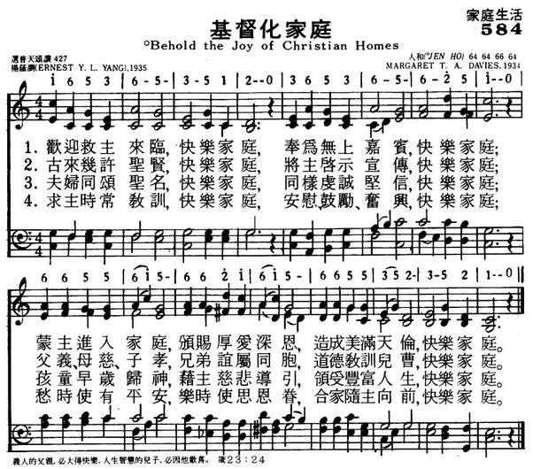

|
|
|
|
|
584基督化家庭
1.欢迎救主来临，快乐家庭，
奉为无上嘉宾，快乐家庭； 蒙主进入家庭，颁赐厚爱深恩， 造成美满天伦，快乐家庭。 2.古来几许圣贤，快乐家庭， 将主启示宣传，快乐家庭； 父义、母慈、子孝，兄弟谊属同胞， 道德教训儿曹，快乐家庭。 3.夫妇同颂圣名，快乐家庭， 同样虔诚坚信，快乐家庭； 孩童早岁归神，藉主慈悲导引， 领受丰富人生，快乐家庭。 4.求主时常教训，快乐家庭， 安慰、鼓励、奋兴，快乐家庭； 愁时使有平安，乐时使思恩眷， 合家随主向前，快乐家庭。 |
|
https://www.mred365.cn/szxg/7587.html
 |
|
|
|
|

楊蔭瀏[編輯]
| 楊蔭瀏 | |
|---|---|

楊蔭瀏（左一）和李元慶、呂驥等，1954年攝
|
|
| 出生 | 1899年11月10日 |
| 逝世 | 1984年2月25日（84歲） |
| 母校 | 聖約翰大學、光華大學 |
| 職業 | 音樂史學家、音樂理論家 |
| 信仰 | 中華聖公會[1] |
| 父母 | 楊鍾琳（父）、錢淑珍（母） |
| 親屬 | 兄楊蔭溥、表妹曹安和 |

楊蔭瀏（1899年11月10日－1984年2月25日），字亮卿，號二壯，又號清如，中國音樂史和音樂理論家，對國樂的保存和發展做出了很大的貢獻。本人擅彈琵琶及三絃等中國樂器。[1][2]
生平[編輯]
楊蔭瀏出生於光緒三十五年十月初八（1899年11月10日）江蘇無錫留芳聲巷，[2] 與楊絳同族、更與楊蔭榆同輩，母親錢淑珍是錢基博的叔伯姊妹、哥哥楊蔭溥後來成為了經濟學家。[3] 幼時在家和私塾中接受傳統教育，6歲開始向鄰里學習江南絲竹。待到青少年時期，楊蔭瀏先後在無錫東林小學和師範接受教育。1911年師從吳畹卿在無錫的天韻社學習唱崑曲及琵琶、三絃，直到楊蔭瀏二十七歲左右吳畹卿去世為止，二人都保持著師生關係，[4] 他實際上也是天韻社的最後一代傳人。同時，楊蔭瀏在12歲時從美國女傳教士郝路義（Louise Strong Hammand）學習鋼琴及西方音樂理論，二人關係十分密切，楊蔭瀏自述曾叫郝路義乾媽。1920年加入中華聖公會成為基督教徒。[1] 1921年自無錫第三師範學校畢業。[5]
1923年至1925年進入上海的聖約翰大學經濟系與光華大學（今華東師範大學）學習，但在1926年輟學，輾轉在無錫、宜興擔任中學教師，1928年還在宜興中學教書的楊蔭瀏被任命為「中華聖公會統一讚美詩委員會」成員，參加聖公會的讚美詩編輯工作，同年秋辭去宜興中學職務開始專門編寫讚美詩。1931年編成《頌主詩集》，在教會內部刊印。不久中華基督教會聯合中華「六公會」組成「聯合聖歌委員會」，楊蔭瀏亦是32名委員會成員之一。[1] 1936年至1937年任北平哈佛燕京學社音樂研究員、1940年代擔任國立音樂院國樂系與金陵女子大學音樂系教授，亦曾在擔任禮樂館編纂、樂典組主任等職。1945年抗戰結束後隨國立音樂院前往南京，此時接到哈佛大學去教授中國音樂史的邀請，但認為「脫離了中國音樂的實際環境就無法研究中國音樂的歷史和現狀」而拒絕。1949年中華人民共和國成立後，楊蔭瀏進入中央音樂學院擔任教授，後來歷任音樂研究所副所長、所長，與呂驥、李元慶並稱音樂研究所的「三駕馬車」。此外也擔任過中國音樂家協會常務理事。1950年暑假和表妹曹安和一起到無錫給阿炳錄下了名曲《二泉映月》。[6][7] 文化大革命爆發後被下放到幹校。[7] 1980年左右任中國藝術研究院顧問。1984年2月25日在北京病逝。[5]
貢獻[編輯]
楊蔭瀏專攻中國音樂史、樂律學與民族音樂研究，做過大量的中國民樂搜集、整理以及研究工作，常說：「中國古代音樂史不能成為『啞巴』音樂史」。[8]同時他也試圖融合中西音樂理論並解決民族音樂古今脫節的現象。在1949年之前，楊蔭瀏就整理了很多民族音樂書譜，包括《雅音集》、《笛譜》、《簫譜》和《文板十二曲線譜》等，其重要著作《國樂概論》與《中國音樂史綱》也是在這一時期完成的。此外，楊蔭瀏曾師從心理學家劉廷芳、物理學家丁燮林研究聲學，為民族樂器與樂律研究開創了新的研究領域。[5]
中華人民共和國建立之後完成的主要作品為1982年著成的《中國古代音樂史稿》，此外還進行過姜白石詞譜譯解、古樂器考古與測音研究工作等。晚年總結平生所學得出《管律辨訛》、《三律考》。[5] 中國音樂史在他一代幾於大成，楊蔭瀏自己曾說：「我希望以後的年輕人，不要再去編中國音樂史，你們不可能達到一個我這樣的程度，你們應該去搞斷代史和專題。」此外他對當時流行音樂界頗為反感，曾批評「交響樂、歌劇才是資產階級的東西，資產階級瞧不起鄧麗君這樣的東西」。[7]
著作[編輯]
- 《雅音集》（第一和第二集，1923-1929）
- 《頌主詩集》（1931）
- 《國樂概論》（1943）
- 《中國音樂史綱》（1943）
- 《中國音樂史新舊音階的相互影響》（1945）
- 《白石道人歌曲研究》 （與陰法魯合著，1957）
- 《如何對待五聲音階與七聲音階同時存在的歷史情況》（1959）
- 《語言音樂學初探》（1963）
- 《律學的目的性與傾向性》 （1965）
- 《中國古代音樂史稿》（1982）
杨荫浏：中国宗教音乐研究的拓荒者
2010年06月12日 14:04:00 中国宗教网
杨荫浏先生是公认的中国民族音乐学的奠基者。在宗教音乐研究领域，他更是当之无愧的开路先锋。他对无锡道教音乐、青城山道教音乐、中国基督教圣乐、北京智化寺音乐、西安鼓乐、五台山寺庙音乐、湖南宗教音乐等都进行了深入的调查研究。时至今日，中国宗教音乐的研究者们，无论是在道教音乐、佛教音乐等传统音乐方面，还是在基督教圣乐方面，都无法绕开杨先生的研究成就。
一
杨荫浏先生于1899年11月10日（光绪三十五年十月初八）出生在江苏无锡，祖父辈“以教读游幕为业”。
无锡杨氏名人辈出：杨荫杭（杨绛的父亲）、杨荫榆与其同族同辈；母亲钱淑珍是钱基博（钱钟书的父亲）的叔伯姊妹；兄长杨荫溥是著名的经济学家；前国家副主席荣毅仁的夫人杨鉴清也来自无锡杨家……杨荫浏先生的小儿子杨国桢先生曾回忆：“老家的大堂并排停放八匹马后还可以留下过人的通道，悬挂有李鸿章书写的匾额‘怡清堂’，另有袁世凯题写的匾额。”
杨荫浏6岁入私塾接受中国传统教育，通习中国文史及诗词，包括十三经、唐诗及《纲鉴易知录》等，12岁进入无锡县立东林小学读高小，16岁毕业后再读私塾一年，补读《易经》、《诗经》等古籍，读完其父规定的161本经史诗词。此后，先后在无锡第三师范学校、无锡辅仁中学、上海圣约翰大学、光华大学等学校就读，在光华大学因“家贫，未能毕业”，但那时他已是26岁的青年。纵观杨荫浏先生的整个青少年时代，他一直受着系统而良好的中西方文化教育，中文和英文基础都极为坚实，这为他日后从事中国传统音乐研究和编译西方圣乐提供了非常有利的条件。
二
杨荫浏先生与宗教音乐的结缘自孩童时代就开始了，他的启蒙老师是一位名叫颖泉的小道士。六七岁时，家里长辈因为怕孩子们沾染社会上的不良习惯，不让他和哥哥荫溥出大门戏玩，于是便容许颖泉每日傍晚来和他们玩耍，教他们学习乐器，并抄录工尺谱本民间器乐曲。11岁时，因颍泉转到城外道院，音乐学习中断。后来有一班道士来他家做法事，兄弟俩就向他们请教乐器演奏，道士们推荐了技艺最好的阿炳教他们。这样，杨荫浏又向阿炳学习弹奏琵琶和三弦。但因其父不喜欢阿炳，认为他没有礼貌，处事随便，不如颖泉老成可靠，一年之后，便通过亲戚介绍，转到昆曲名家、“天韵社” 社长吴畹卿先生那里学习昆曲。
1949年与国立音乐学院国乐组第三届毕业生合影（后排左二为杨荫浏）
杨先生与道教音乐家和民间吹鼓手一直保持着密切关系，在离开无锡之前，他不仅抄录了十番锣鼓和十番鼓的乐谱，而且还时常参加他们的演出。旧社会民间俗称“王八戏子吹鼓手”，从书礼家庭走出来的杨荫浏对这些地位低下的“伙居道”和民间吹鼓手不仅没有丝毫轻视，反倒非常敬重他们。有一次，一个美国人想听中国传统音乐，杨荫浏去无锡乡间请了几位道人，在公园演奏梵音锣鼓。他的朋友对此很不解，为什么要弄“道士拜忏”给外国人听？他回答：“道教是地道的中国宗教，道教的音乐是典型的中国民间音乐……我请来的几个道人都是高手。”果然，那次演奏非常成功。
1937年，杨先生回无锡度假期间，经友人协助，搜集苏南民间音乐数十本进行研究，这是他第一次对道教音乐进行有意识的搜集、整理。1942年，他首次接触到全真教音乐。那年暑假，他应邀赴四川青城山避暑，住常道观，从一青年道士处采录到道教音乐九首。据说该道士能唱诵有音调的赞歌百余首，词见《道藏辑要》中的《全真正韵》一书，音调全凭口授。后因观主阻拦，未能采录更多。对于这个遗憾，多年以后杨先生仍耿耿于怀。
因为一曲闻名天下的《二泉印月》，瞎子阿炳与杨荫浏的关系一直备受人们关注。杨先生在《阿炳小传》中写到：“我个人除了在听众中间听过他几次演奏之外，和他曾经发生过几次比较密切的关系。”第一次是1911年，年幼的杨荫浏跟阿炳学习三弦和琵琶一些曲调的弹法，前后约一年时间；第二次在1937年春，阿炳向杨荫浏请教，要杨拨着他的手指，“使他在琵琶上摸索到‘将军令’曲中‘撤鼓’的弹奏方法”；第三次是1947年，杨荫浏请阿炳旁听为其他道友组织排练的十番锣鼓；最后一次就是1950年，杨荫浏和曹安和一道，为阿炳采录《二泉印月》等6首曲子，录完后两人又合奏“三六”。阿炳对杨荫浏的影响可能不及颖泉及朱勤甫等人，但却是因为杨荫浏，才使阿炳这位苦难的民间艺人和他的不朽作品不致于湮没在无锡旧街头的泥尘中。
三
如果说道教音乐已经融入杨荫浏的血脉的话，那么基督教圣乐则是他另一种不可或缺的精神食粮。
这方面，他的引路人是美籍基督教传教士郝路义（Louise Strong Hammand）女士。郝路义来自音乐世家，她的弟弟是郝氏电风琴的发明者。她喜欢中国文学，还能做旧体诗，在传道时见到小小年纪的杨荫浏能吹笛弄萧，便教他英文、钢琴、视唱等，后来又教和声、对位、复调等作曲法，杨荫浏则教她吹笙、昆曲及音韵学，两人互教互学，成为忘年之交。杨先生曾说：“她很喜欢我……我曾称她为‘干妈’……她是想把我培养成宗教音乐家。”
会见日本音乐家田边秀雄（1982 北京寓所）
郝路义的教授为日后杨荫浏在基督教赞美诗编纂及翻译方面作出贡献奠定了扎实的基础。1920年，杨荫浏加入中华基督教圣公会，成为基督徒。1928年，中华基督教圣公会决定编辑出版一本为全国各地圣公会通用的赞美诗，杨荫浏经郝路义推荐，被聘为专职委员。他很重视这份工作，作了不少认真的准备，通读了新旧约圣经，同时兼读了圣经注释并且时加摘录。他还先后奔赴南京、杭州等地，经过两三年的努力，辑成《颂主诗集》一册。
同年，中华基督教会、中华圣公会、美以美会、华北公理会、华东浸礼会和监理会等6个基督教宗派决定联合编辑一本可通用的《圣诗集》，并成立了“六公会联合圣歌编辑委员会”，杨荫浏被推举为总干事。1936年，《普天颂赞》圣诗集出版，收有曲调548首，其中杨荫浏与刘廷芳合作翻译、修订210首，而这210首中，由杨先生自己单独翻译的竟达150首之多。另外，他还独自作曲15首，作词7首，并撰写了《普天颂赞》数字谱（即简谱）“序”。为了配合此诗集的编辑，自1934年起，由刘廷芳任主编、燕京大学宗教学院出版的宗教月刊《真理与生命》开辟了宗教音乐理论专栏《圣歌与圣乐》，主要讨论圣诗集的遴选、翻译、和声、词曲编配等问题，在大约3年的编辑过程中，杨先生陆续将自己对基督教圣乐的心得和研究写成文章，其中多数发表在《真理与生命》上。
杨荫浏先生自身深厚的文学修养和音乐素养与其真诚的宗教情感相结合，创作出许多优秀的圣诗作品。至今，由其谱写及改编的赞美诗仍有许多在中国各地的基督教会中经常颂唱。可以说，有华人基督徒的地方，就有《普天颂赞》存在！20世纪80年代以后，杨先生被中国基督教三自爱国运动委员会所属的“中国基督教圣诗委员会”聘为顾问，指导修订《赞美诗新编》，这本圣诗集自1983年出版以来，一直是国内基督教会和广大信众的必备书籍。
四
相对于在童年时期就浸润其中的道教音乐和基督教音乐而言，杨荫浏先生对佛教音乐的接触比较晚，但他在这方面的开创性成就却绝对不可小觑。
1953年，时任中央音乐学院民族音乐研究所副所长的杨先生考察了智化寺京音乐，其研究成果以油印本的形式刊印了两本采访记录——《智化寺京音乐（一）、（二）》和《智化寺京音乐（三）》。考察了智化寺的历史及其音乐传统、擅长京音乐的僧人、曲调、乐谱、宫调、乐器、曲牌名称等诸多问题，对智化寺音乐进行了历史及音乐形态学的初步研究。迄今，这两本采访记录仍是智化寺京音乐研究最权威的参考资料。
杨荫浏在燕京大学工作时留影（1936）
1956年，杨荫浏率领由民族音乐研究所和湖南省文化局联合组成的采访队，对湖南民间音乐进行了为期3个月的普查，采访了44个县。这次普查详细记录了当时湖南宗教音乐的基本情况，具有很高的历史学术价值；同时，“不但为当时刚刚正式起步的中国音乐学树立了一个田野工作的示范，也为上世纪70年代末开始的《中国民歌集成》和《中国民族民间器乐曲集成》在全国范围内的搜集、整理、编撰工作，提供了一个高质量的、可操作性极强的样板”。其考察成果涉及佛教音乐（包括禅门音乐、应门音乐和民间佛曲）、道教音乐、师教（巫教）音乐、儒教音乐等四个方面。1956年，杨先生又根据对湖南双峰县佛教居士林释隐莲的采访，写了《佛教禅宗水陆中所用的音乐》（油印稿），考察了佛教水陆法会音乐的基本情况。
五
1961年5月10日，杨荫浏先生在《文汇报》上发表了《如何对待我国的宗教音乐》，曲折地为宗教音乐争取一丝存留的机会。他提醒人们要注意宗教音乐的复杂性。“……宫廷音乐和宗教音乐，虽然就其应用的阶级目的而言，主要是坏的，但其中特别是曲调的部分，却还含有一部分精华，应该特别把它剔造出来，以之归还人民。”“寺院音乐中非但有许多民间音乐可以供我们采用，即使某些在今天不能直接采用的东西，也还有一部分价值。”即使对于“我们无产阶级”来说是“无可救药”了的“坏东西”，作为一个音乐学家，也还是“记录下来比不记录下来好”。今天我们重读杨先生这篇文章的时候，字里行间，仍然可以体会到当时当日他的良苦用心。晚年以后的杨荫浏，对宗教音乐谈得并不多，但他还是强调自己是个“宗教音乐家”。
1984年，85岁高龄的杨荫浏先生去世。生前，他未能看到中国宗教音乐研究的复苏。如今，20多年过去了，宗教音乐的保护与研究已取得了喜人的成就。而且，随着国家保护非物质文化遗产政策的实施，包括五台山佛乐、智化寺京音乐、千山寺庙音乐、天宁寺梵呗唱诵、鱼山梵呗、大相国寺梵乐、玄妙观道教音乐、武当山宫观道乐等在内的一大批宗教音乐被列入国家级非物质文化遗产名录，对其研究和保护也已进入到一个全新的境地。
这些，足以告慰先生的英灵了吧！（文：翟风俭）